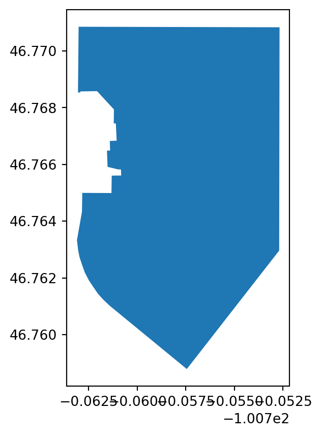

# Work with vector data
import geopandas as gpd
# Save maps and plots to files
import holoviews as hv
# Create interactive maps and plots
import hvplot.pandas
# Search for locations by name - this might take a moment
from osmnx import features as osmAdd a map to your website
Get started with maps
Search for geospatial features, add them to a map, and post the map on your website.
Keywords
Vector Data, Cartography
Learn how to create maps using geoviews.
Finding locations and boundaries
About Spatial Vector Data
Vector data are composed of discrete geometric locations (x, y values) known as vertices that define the “shape” of the spatial object. The organization of the vertices determines the type of vector that you are working with. There are three types of vector data:
Points: Each individual point is defined by a single x, y coordinate. Examples of point data include: sampling locations, the location of individual trees or the location of plots.
Lines: Lines are composed of many (at least 2) vertices, or points, that are connected. For instance, a road or a stream may be represented by a line. This line is composed of a series of segments, each “bend” in the road or stream represents a vertex that has defined x, y location.
Polygons: A polygon consists of 3 or more vertices that are connected and “closed”. Thus, the outlines of plot boundaries, lakes, oceans, and states or countries are often represented by polygons.

Tip
Read more about working with spatial data using Python in our Intro to Earth Data Science, here.
Mapping libraries
You’ll need to start by importing the following libraries
Search for a point of interest
You can use the pyrosm package to download and search for spatial vector data in your area, or anywhere around the world.
In this case, we’re looking for the location of the United Tribes Technical College campus in North Dakota. The address in here, 'United Tribes Technical College, Bismarck, ND, United States', does not have to be complete or exact, but it should be specific enough to narrow it down. We are also specifying that we want it to be tagges as a 'amentity' type, specifically a 'college' You might have to try a couple different searches with different addresses and/or tags to get the address you want, just like if you are using a map website or app.
# Search for United Tribes Technical College
uttc_gdf = osm.features_from_address(
'United Tribes Technical College, Bismarck, ND, United States',
{'amenity': ['college']})
uttc_gdf| nodes | addr:city | addr:housenumber | addr:postcode | addr:state | addr:street | amenity | name | website | wikidata | geometry | ||
|---|---|---|---|---|---|---|---|---|---|---|---|---|
| element_type | osmid | |||||||||||
| way | 1157021269 | [10759584855, 10759584856, 10759584857, 450404... | Bismarck | 3315 | 58504 | ND | University Drive | college | United Tribes Technical College | https://uttc.edu/ | Q7893617 | POLYGON ((-100.76305 46.76853, -100.76302 46.7... |
uttc_gdf.plot()
We have a map of the UTTC Campus!
Warning
The Open Street Maps (OSM) database is not always complete. For example, try searching for UTTC with the {'building': True}, and compare it to the map of the UTTC campus on their website. What do you notice?
Create an interactive map
There are lots of different ways to create maps and plots in Python. Here, we’re going to use a tool called 'hvplot' and 'geoviews' to create an interactive map, including the online 'EsriImagery' tile source basemap.
# Plot UTTC boundary
uttc_map = uttc_gdf.reset_index().hvplot(
# Givethe map a descriptive title
title="United Tribes Technical College, Bismarck, ND",
# Add a basemap
geo=True, tiles='EsriImagery',
# Change the colors
fill_color='white', fill_alpha=0.2,
line_color='skyblue', line_width=5,
# Change the image size
frame_width=400, frame_height=400)
# Save the map as a file to put on the web
hv.save(uttc_map, 'uttc.html')
# Display the map
uttc_mapWARNING:bokeh.core.validation.check:W-1005 (FIXED_SIZING_MODE): 'fixed' sizing mode requires width and height to be set: figure(id='p1393', ...)Place your map in your webpage
You can now place your map in your webpage using the following HTML:
<embed
type="text/html" src="uttc.html"
width=600, height=600>
</embed>